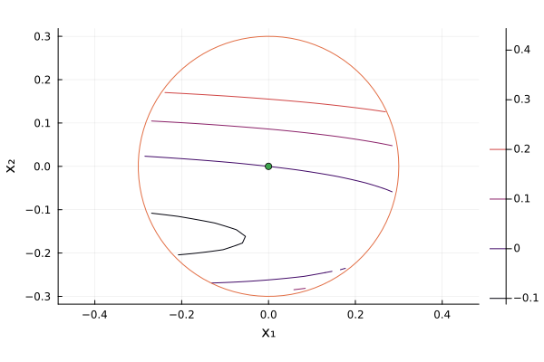

Eigenfunctions of the Koopman operator

 Adapted from: Example 2.6 of [MAI20]
Adapted from: Example 2.6 of [MAI20]
[MAI20] Mauroy, Alexandre, Aivar Sootla, and Igor Mezić. Koopman framework for global stability analysis. The Koopman Operator in Systems and Control: Concepts, Methodologies, and Applications (2020): 35-58.
using DynamicPolynomials
using LinearAlgebra
@polyvar x[1:2]
a = 1
I = 0.05
ε = 0.08
γ = 1
F0 = [-x[2] - x[1] * (x[1] - 1) * (x[1] - a) + I, ε * (x[1] - γ * x[2])]2-element Vector{DynamicPolynomials.Polynomial{Float64}}:
0.05 - x₂ - x₁ + 2.0x₁² - x₁³
-0.08x₂ + 0.08x₁We move the equilibrium, approximately (0.0256, 0.0256), to the origin. Since γ = 1, both coordinates are equal. Newton's method refines the rounded value so that the translated vector field vanishes at the origin.
x_eq = let z = 0.0256
for _ in 1:5
z -= (-z - z * (z - 1)^2 + I) / (-2 + 4z - 3z^2)
end
z
end
F = [f(x => x .+ x_eq) for f in F0]2-element Vector{DynamicPolynomials.Polynomial{Float64}}:
-3.7100043089738355e-18 - x₂ - 0.8993758546202244x₁ + 1.9230516279758776x₁² - x₁³
-0.08x₂ + 0.08x₁We compute the Jacobian at the equilibrium.
J = [j(x => zeros(2)) for j in differentiate(F, x)]2×2 Matrix{Float64}:
-0.899376 -1.0
0.08 -0.08Its eigenvalues have negative real part. The linear term w ⋅ x of a Koopman eigenfunction must satisfy J' * w = λ * w, so we need a left eigenvector of J. A right eigenvector leaves a nonzero linear residual which the higher-degree terms cannot cancel. We therefore use a left eigenvector instead of the right eigenvector stated in Example 2.6, consistently with Eq. (2.7) on p. 42 of the book.
E = eigen(J')
λ = E.values[end]
w = E.vectors[:, end]2-element Vector{Float64}:
-0.11258237486231153
-0.9936423948636461Eigenfunctions are defined up to a scalar factor. We choose a unit gradient with positive second component to fix the sign of the contour labels. Figure 2.3 appears to use the original coordinates, with the equilibrium at (x_eq, x_eq), and a different normalization. Our axes are shifted to the equilibrium and our gradient has unit norm, so the contour labels need not coincide with those in the book.
if w[2] < 0
w = -w
end2-element Vector{Float64}:
0.11258237486231153
0.9936423948636461We approximate the eigenfunction on the disk of radius r. Working in coordinates y = x / r avoids the very small high-degree monomials on this disk. The scaled vector field is G(y) = F(r * y) / r.
using SumOfSquares
r = 0.3
@polyvar y[1:2]
G = [f(x => r .* y) / r for f in F]
X = @set y[1]^2 + y[2]^2 ≤ 1Basic semialgebraic Set defined by no equality
1 inequality
1 - y[2]^2 - y[1]^2 ≥ 0
We define the program for the FitzHugh-Nagumo problem below: N is the degree of ϕN as defined in [MAI20, p. 50] and M is the degree of the multipliers for the constraints of X. As maxdegree corresponds to the degree of the multiplier multiplied by 1 - y[1]^2 - y[2]^2, we set it to M + 2.
function fitzhugh_nagumo(solver, N, M)
model = SOSModel(solver)
@variable(model, η)
@objective(model, Min, η)
@variable(model, ϕN, Poly(monomials(y, 2:N)))
ϕ = r * (w ⋅ y) + ϕN
residual = G ⋅ differentiate(ϕ, y) - λ * ϕ
@constraint(model, -η ≤ residual, domain = X, maxdegree = M + 2)
@constraint(model, residual ≤ η, domain = X, maxdegree = M + 2)
optimize!(model)
return ϕ(y => x ./ r), model
endfitzhugh_nagumo (generic function with 1 method)In [MAI20, p. 50], the result is obtained with N = 10 and M = 20.
import CSDP
solver = optimizer_with_attributes(CSDP.Optimizer, MOI.Silent() => true)
ϕ, model = fitzhugh_nagumo(solver, 10, 20)
solution_summary(model)solution_summary(; result = 1, verbose = false)
├ solver_name : CSDP
├ Termination
│ ├ termination_status : OPTIMAL
│ ├ result_count : 1
│ └ raw_status : Problem solved to optimality.
├ Solution (result = 1)
│ ├ primal_status : FEASIBLE_POINT
│ ├ dual_status : FEASIBLE_POINT
│ ├ objective_value : 7.98206e-06
│ └ dual_objective_value : 7.98004e-06
└ Work counters
└ solve_time (sec) : 7.51452e-01The optimal polynomial is obtained as follows:
ϕ_opt = value(ϕ)
residual_opt = F ⋅ differentiate(ϕ_opt, x) - λ * ϕ_opt\[ -4.176810958536834 \cdot 10^{-19} - 2.7755575615628914 \cdot 10^{-17}x_{2} - 3.122502256758253 \cdot 10^{-17}x_{1} + 0.001589117951892538x_{2}^{2} - 0.0017526156606608185x_{1}x_{2} - 0.0005623871357281554x_{1}^{2} - 0.0041009891176863045x_{2}^{3} - 0.008867718701428414x_{1}x_{2}^{2} + 0.031128772738132367x_{1}^{2}x_{2} - 0.004558255532275658x_{1}^{3} - 0.13813749046498236x_{2}^{4} + 0.23999434702416225x_{1}x_{2}^{3} - 0.19839166220131488x_{1}^{2}x_{2}^{2} + 0.16011222666642305x_{1}^{3}x_{2} + 0.05182033487882621x_{1}^{4} + 0.2100627555294753x_{2}^{5} + 0.23463440977428335x_{1}x_{2}^{4} - 1.7688819897590162x_{1}^{2}x_{2}^{3} + 2.321051440816212x_{1}^{3}x_{2}^{2} - 2.1517780831582964x_{1}^{4}x_{2} + 0.12894001390622736x_{1}^{5} + 3.713559679457825x_{2}^{6} - 9.018163471224351x_{1}x_{2}^{5} + 12.537736733958404x_{1}^{2}x_{2}^{4} - 13.278552560239277x_{1}^{3}x_{2}^{3} + 6.302892741839159x_{1}^{4}x_{2}^{2} - 4.758976851131787x_{1}^{5}x_{2} - 1.5456943303916357x_{1}^{6} - 3.1399698923511323x_{2}^{7} - 0.7973811338395951x_{1}x_{2}^{6} + 28.21768417298625x_{1}^{2}x_{2}^{5} - 77.54216887725512x_{1}^{3}x_{2}^{4} + 116.61669697139598x_{1}^{4}x_{2}^{3} - 79.88698746778421x_{1}^{5}x_{2}^{2} + 44.76755368463776x_{1}^{6}x_{2} + 0.12308496242172713x_{1}^{7} - 39.51048804914126x_{2}^{8} + 125.9779059787154x_{1}x_{2}^{7} - 218.95742326185285x_{1}^{2}x_{2}^{6} + 295.5446811344842x_{1}^{3}x_{2}^{5} - 264.26007899641235x_{1}^{4}x_{2}^{4} + 212.80854296665797x_{1}^{5}x_{2}^{3} - 57.404546848493x_{1}^{6}x_{2}^{2} + 53.149215144758784x_{1}^{7}x_{2} + 17.93618768134205x_{1}^{8} + 14.211663563311845x_{2}^{9} - 9.593223967183235x_{1}x_{2}^{8} - 159.06845927593145x_{1}^{2}x_{2}^{7} + 746.0233196803837x_{1}^{3}x_{2}^{6} - 1696.469233697263x_{1}^{4}x_{2}^{5} + 2151.4729013118676x_{1}^{5}x_{2}^{4} - 1825.8363803354364x_{1}^{6}x_{2}^{3} + 852.4840693591922x_{1}^{7}x_{2}^{2} - 354.36476271839604x_{1}^{8}x_{2} - 24.484905420123088x_{1}^{9} + 145.72268640603764x_{2}^{10} - 586.6125236351234x_{1}x_{2}^{9} + 1161.3005285752497x_{1}^{2}x_{2}^{8} - 1931.4402968791674x_{1}^{3}x_{2}^{7} + 2221.7282465862727x_{1}^{4}x_{2}^{6} - 1930.3969666853845x_{1}^{5}x_{2}^{5} + 954.2666607958115x_{1}^{6}x_{2}^{4} - 647.4529470681073x_{1}^{7}x_{2}^{3} - 41.47491381417394x_{1}^{8}x_{2}^{2} - 149.96310671067795x_{1}^{9}x_{2} - 64.05422709037786x_{1}^{10} + 446.017820152481x_{1}^{2}x_{2}^{9} - 1675.8768140153263x_{1}^{3}x_{2}^{8} + 6379.74227724151x_{1}^{4}x_{2}^{7} - 13581.691415441444x_{1}^{5}x_{2}^{6} + 16009.437896213369x_{1}^{6}x_{2}^{5} - 12826.853397242694x_{1}^{7}x_{2}^{4} + 7749.3385160833905x_{1}^{8}x_{2}^{3} - 2797.1775610136783x_{1}^{9}x_{2}^{2} + 911.437438746137x_{1}^{10}x_{2} + 152.97876164982998x_{1}^{11} - 231.93231719001764x_{1}^{3}x_{2}^{9} + 242.12138556980437x_{1}^{4}x_{2}^{8} - 1604.9282171180294x_{1}^{5}x_{2}^{7} + 5420.905726668817x_{1}^{6}x_{2}^{6} - 7598.292422778245x_{1}^{7}x_{2}^{5} + 6641.227385609172x_{1}^{8}x_{2}^{4} - 4282.903214015066x_{1}^{9}x_{2}^{3} + 1636.6657521753502x_{1}^{10}x_{2}^{2} - 560.6668560819611x_{1}^{11}x_{2} - 74.14153980552358x_{1}^{12} \]
We plot its level sets inside the disk where the residual is constrained. Values outside this disk are extrapolations and are excluded from both the plot and the error calculation below.
using Plots
x1s = x2s = range(-r, r, length = 40)
inside = [u^2 + v^2 ≤ r^2 for v in x2s, u in x1s]
ϕs = [
inside[i, j] ? ϕ_opt(x => [u, v]) : NaN for
(i, v) in enumerate(x2s), (j, u) in enumerate(x1s)
]
contour(
x1s,
x2s,
ϕs;
levels = [-0.2, -0.1, 0, 0.1, 0.2, 0.5, 0.7],
aspect_ratio = :equal,
xlabel = "x₁",
ylabel = "x₂",
)
θ = range(0, 2π, length = 100)
plot!(r * cos.(θ), r * sin.(θ), label = "")
scatter!([0], [0], label = "")
We can check the Koopman identity using the finite-time Laplace average of ϕ_opt. An exact eigenfunction satisfies exp(-λ * t) * ϕ(S(t, x)) = ϕ(x) along a trajectory. Solve each trajectory once, then integrate using its dense interpolant. Tight tolerances matter because exp(-λ * t) amplifies integration errors.
import OrdinaryDiffEqTsit5
using QuadGK
function laplace_average(f, λ, x1, x2, T = 10.0)
prob = OrdinaryDiffEqTsit5.ODEProblem(
(v, p, t) -> [g(x => v) for g in F],
[x1, x2],
(0.0, T),
)
traj = OrdinaryDiffEqTsit5.solve(
prob,
OrdinaryDiffEqTsit5.Tsit5();
reltol = 1e-11,
abstol = 1e-13,
)
v, _ = quadgk(t -> f(traj(t)) * exp(-λ * t), 0.0, T; rtol = 1e-7)
return v / T
end
lap(x1, x2) = laplace_average(v -> ϕ_opt(x => v), λ, x1, x2)
laplace = [
inside[i, j] ? lap(u, v) : NaN for
(i, v) in enumerate(x2s), (j, u) in enumerate(x1s)
]40×40 Matrix{Float64}:
NaN NaN NaN NaN NaN … NaN NaN NaN NaN NaN
NaN NaN NaN NaN NaN NaN NaN NaN NaN NaN
NaN NaN NaN NaN NaN NaN NaN NaN NaN NaN
NaN NaN NaN NaN NaN NaN NaN NaN NaN NaN
NaN NaN NaN NaN NaN NaN NaN NaN NaN NaN
NaN NaN NaN NaN NaN … NaN NaN NaN NaN NaN
NaN NaN NaN NaN NaN NaN NaN NaN NaN NaN
NaN NaN NaN NaN NaN NaN NaN NaN NaN NaN
NaN NaN NaN NaN -0.110708 -0.0401727 NaN NaN NaN NaN
NaN NaN NaN NaN -0.111655 -0.0455329 NaN NaN NaN NaN
⋮ ⋱ ⋮
NaN NaN NaN NaN 0.210627 0.273319 NaN NaN NaN NaN
NaN NaN NaN NaN NaN NaN NaN NaN NaN NaN
NaN NaN NaN NaN NaN NaN NaN NaN NaN NaN
NaN NaN NaN NaN NaN NaN NaN NaN NaN NaN
NaN NaN NaN NaN NaN … NaN NaN NaN NaN NaN
NaN NaN NaN NaN NaN NaN NaN NaN NaN NaN
NaN NaN NaN NaN NaN NaN NaN NaN NaN NaN
NaN NaN NaN NaN NaN NaN NaN NaN NaN NaN
NaN NaN NaN NaN NaN NaN NaN NaN NaN NaNWe report the maximum absolute discrepancy on the disk. Unlike a matrix norm over the enclosing square, this error excludes unconstrained points and does not grow merely because the grid is refined. It checks the eigenfunction identity over a finite time, rather than providing a bound on the error with respect to the exact eigenfunction.
maximum(abs, laplace[inside] - ϕs[inside])0.02288408073433648The disk is not forward invariant: some trajectories starting inside it leave it, so a small residual on the disk does not guarantee a small Laplace-average discrepancy for all those initial states. Increasing T does not fix extrapolation outside the approximation domain. For initial states in the smaller disk of radius r / 2, the discrepancy is much smaller:
inner = [u^2 + v^2 ≤ (r / 2)^2 for v in x2s, u in x1s]
maximum(abs, laplace[inner] - ϕs[inner])6.18791052426626e-5The finite-time identity discrepancies above need not match the error reported in the book, especially when eigenfunctions have different scalar normalizations.
This page was generated using Literate.jl.